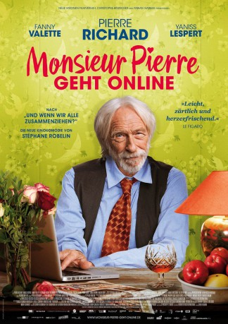

#7649 Monsieur Pierre geht online
 gesehen am 13.04.2018
gesehen am 13.04.2018
 
 IMDB-Wertung: 6.4 / 10
IMDB-Wertung: 6.4 / 10  Metascore: 0
Metascore: 0 
Pierre, ein verwitweter Rentner hat seit zwei Jahren das Haus nicht mehr verlassen. Dank Alex, einem jungen Mann, den seine Tochter angeschleppt hat, um ihrem Vater mit dem Computer zu helfen entdeckt Pierre die Freuden des Internets und vor allem die Vorzüge von Dating-Seiten. Dort stolpert er eines Tages über dass Profil der schönen und jungen flora63, die ebenfalls von ihrem Gegenüber angetan ist und die irgendwann ein Treffen vorschlägt. Das Dumme ist dabei nur: Pierre hat als Profilbild ein Foto von Alex online gestellt - und deshalb soll der sich nun mit der jungen Frau treffen …
Jahr: 2017
Dauer: 100 Minuten
FSK: 0
Land: Österreich Studio: Neue Visionen FilmverleihTonspuren:
Untertitel:
Auflösung: 1080p (1920x1040) Größe: 6246 MB
Genre: Komödie, Liebe
Regisseur: Stéphane Robelin
Drehbuch: Patrick J. Hobby
Soundtrack:
Darsteller:
 Pierre Richard als Pierre Stein
Pierre Richard als Pierre Stein- Fanny Valette als Flora
- Stéphane Bissot als Sylvie
- Gustave Kervern als Bernard
 Macha Méril als Marie
Macha Méril als Marie Anna Bederke als Madeleine
Anna Bederke als Madeleine Pierre Kiwitt als David
Pierre Kiwitt als David- Laurence Weitzig als Dauphine
- Aurore Cordellier als Martine
- Lyudmila Nesterova als Émilie
- Séphora Haymann als Usager du Métro
- Tom Robelin als Tom Hoverboard
- Yaniss Lespert als Alex
- Stéphanie Crayencour als Juliette
- Philippe Chaine als Le producteur
- Arthur Defays als Simon
- Agnés Claude als Collégue Sylvie
- Aliocha Arbogast als Doucette
- Charlotte Krenz als Caroline
- Delphine Selinger als L'infirmière
- Thiebaut Zaffarana als Serveur du Floréa
- Camille Grosjean als Agent Thalys
- Clémentine Perrin als Employée SNCF
- Céline Calcul als Usager du Métro
- Marie Suran als Usager du Métro
- Alain Pointier als Usager du Métro
- Brigitte Lucas als Vieille Dame Métro
- Mathieu Barbos als Vieil Homme Métro
- Gengnan Yuan als Vendeur Magasin Chinois
- Xavier Richefort als Journaliste Sportif
- Salvatore Caltabiano als Ambiance
- Virginie Gritten als Ambiance
- Aurélia Hascoat als Ambiance
- Philippe Patois als Ambiance
- Élise Bruncher als Élise à la plage
- Lili Robelin als Lili à la plage
- Marie Bruncher als Marie à la plage
- Safir Seidel als Safir à la plage
- Solal Roudil als Solal à la plage
- Zoé Zigulla als Zoé à la plage
- Ferdiand Robelin als Le petit footballeur
- Nicolas-John Logie als Le grand footballeur
- Alexandre Robelin als Alex Monowheel
Datei: X:\2017(G-M)\Monsieur Pierre geht online (2017, FSK0, 1920x1040).mkv seit 29.11.2017
Festplatte: HD 2017(A-Z)-2018(A-F)
 Es gibt insgesamt 148 Filme in der Gruppe '2017(G-M)'
Es gibt insgesamt 148 Filme in der Gruppe '2017(G-M)'